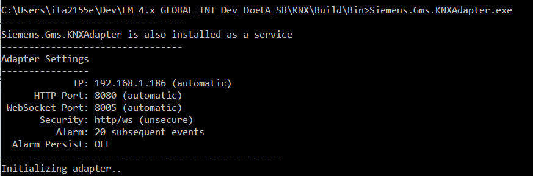
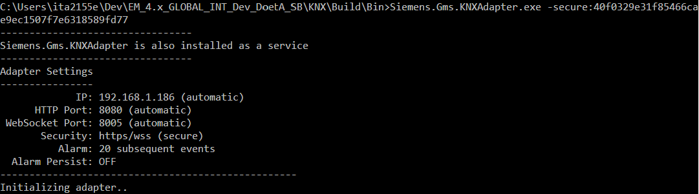

KNX Integration
The KNX adapter allows Desigo CC to integrate KNX building management equipment.

The adapter is not part of the installation. After installation, the adapter installer package (MSI) is available in [Installation Drive]:\[Installation Folder]\GMSMainProject\AddSW\KNX. Once you install and start this software service, the adapter is ready to be executed and used in Desigo CC. For instructions, see Installing, Setting, and Starting the KNX Adapter.
To integrate the KNX adapter, a SORIS driver and a SORIS network (monitored by one SORIS driver) must be created and configured. For instructions, see Integrating KNX.
Once the adapter object is created, it starts automatically as a Windows service using the http or https protocol. You can also start the adapter manually:
- Using the http protocol (unsecure): double-click the executable Siemens.Gms.KNXAdapter.exe available in the file system with the installation.

- Using the https protocol (secure): enter –secure:[thumbprint] by command line.

For each adapter created, it is necessary to configure the URL IP address of the computer from which the network adapter is run. For instructions, see Integrating KNX.
Library
The KNX extension installs the Desigo CC library BA_Device_KNX_HQ_1, which is available at Project > System Settings > Libraries > L1-Headquarter > BA > Device.
Dependencies
The KNX extension is configured to depend on the following extension, which will be automatically added, if it is not already installed in the system, when the KNX installation feature is selected:
- SORIS Driver (see SORIS)
How to Configure the Properties in Custom Object Models
Librarians must create a new KNX object model based on the data (description of communication objects) contained in the relevant KNX device documentation.
For the configuration of each object property, we recommend following the conventions described below.
Property name
Naming convention: [property name]_[identifier] (for example: RoomTemperature_21)
The identifier is a numeric value available in the device documentation.
Property type
In the KNX custom library, create a new object model and set its property Value as follows:
- Copy the type of the
Valueproperty from the data point type of the KNX device documentation. - If the object model has the
CtrlValueproperty set, check W, R, and T flags in the KNX device documentation, and do one of the following: - If the flag is W, you must create two properties with the following naming convention:
- [property name]_[identifier] (for example: RoomTemperature_21)
and of type:GmsEnum.
- [property name]_CtrlValue_[identifier] (for example, RoomTemperature_CtrlValue_21)
and of the same type as theValueproperty. - For all the other flags (RT/WR/WT/WRT), you must create one property only, with the following naming convention:
- [property name]_[identifier] (for example: RoomTemperature_21)
and of type:GmsReal. - For each of the created properties, if the flag is W:
- The command must be set only on the [property name]_[identifier].
- The
TargetedPropertymust be set on theCTrlValueproperty.